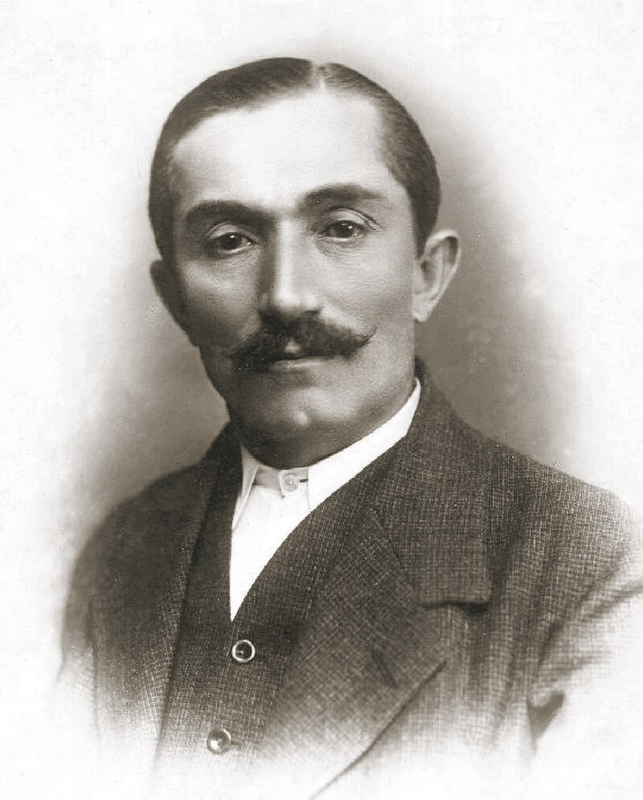
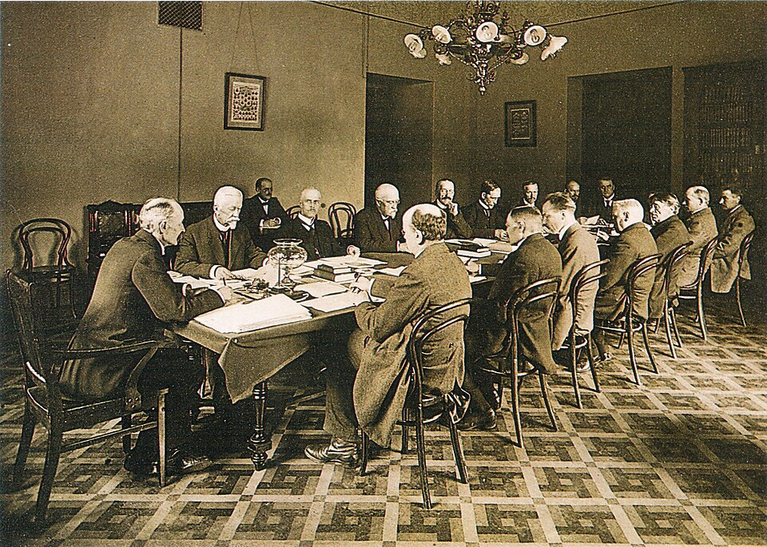
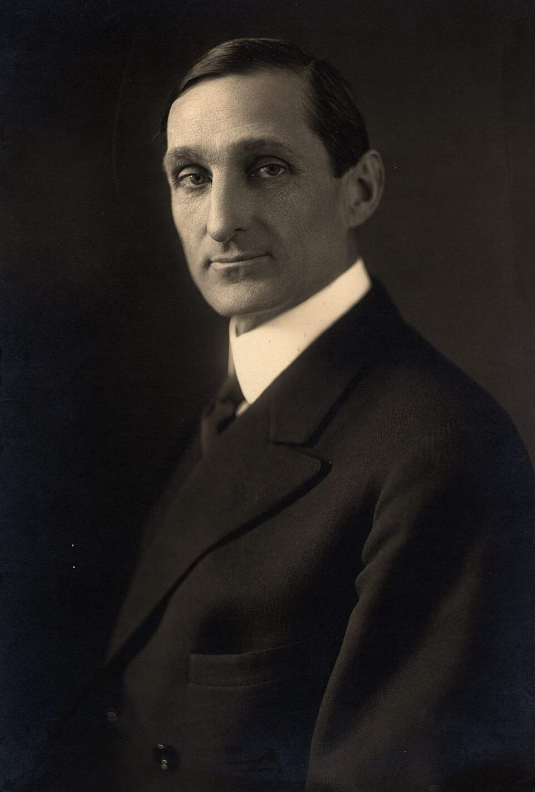

Geschichte im Spiegel der zeitgenössischen Berichterstattung — Täglich neu erzählt
Die historische Presseschau
Dramatische Unterhaussitzung und Angriffe auf die Regierung — Geheime Verhandlungen in der Downing Street — Streikfront beginnt in der Provinz zu bröckeln

Scharfe Angriffe des Marschalls auf das neue Kabinett — Beschlagnahme von Zeitungen in Warschau — Offizierskorps demonstriert für Pilsudski
Umfangreiche Haussuchungen bei rechtsradikalen Verbänden — Pläne für konzentrischen Angriff auf die Hauptstadt entdeckt — Oberst von Luck verhört
Behördliche Schließung der Berliner Bühne — Unklare Hintergründe
Repräsentantenhaus befürwortet Shenandoah- und Smoky-Mountain-Projekt

Geheime Flugblattverteilung in der Truppe aufgedeckt — Spionageverdacht gegen mehrere Soldaten

Anhänger von McAdoo und Smith vereinigen sich — Reformvorschläge für den nächsten Parteitag — Kritik an der Blockademacht von Minderheiten